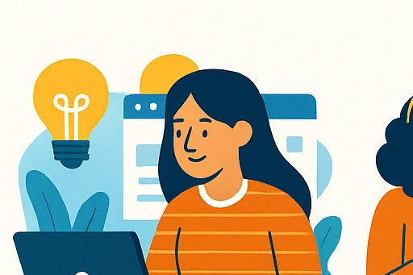
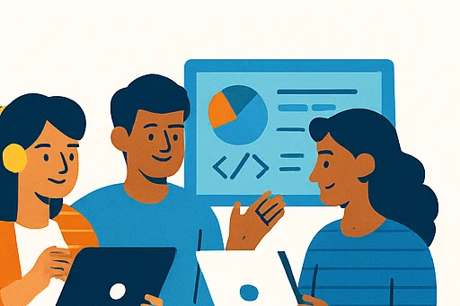
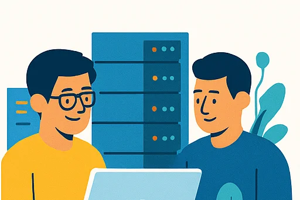
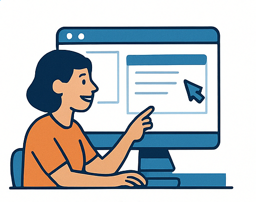
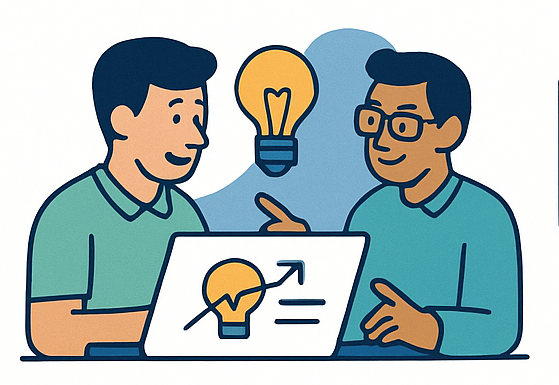
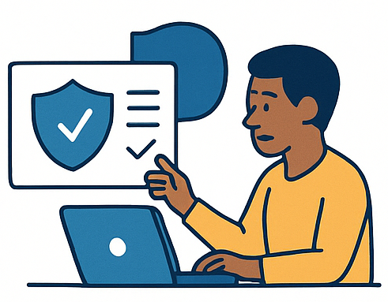
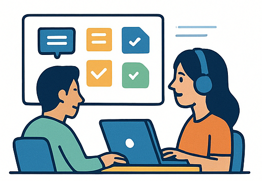

Tecnologia para transformar organizações sociais
Conectamos ONGs a ferramentas digitais, capacitação e voluntariado técnico.

Nossa história
A ZoneSocial nasceu do desejo de levar tecnologia, conhecimento e oportunidades para dentro de comunidades,
organizações sociais e projetos de impacto.
O projeto foi idealizado pela ZoneTech, que ao longo dos anos percebeu que muitas ONGs enfrentavam grandes
desafios para modernizar seus processos, acessar ferramentas digitais e acompanhar a evolução tecnológica.
O que começou como pequenos atendimentos voluntários — ajudando a instalar computadores, organizar redes,
criar sites simples e oferecer suporte básico — se transformou em um movimento estruturado de inclusão
digital e capacitação.
Com o tempo, a ZoneSocial expandiu suas frentes de atuação, passando a oferecer oficinas de alfabetização
digital, cursos introdutórios de programação, mentoria em carreira digital, consultoria em cibersegurança
e apoio tecnológico para iniciativas de impacto social.
Hoje, nossa missão é clara: democratizar a tecnologia e garantir que ONGs, projetos sociais e pessoas em
situação de vulnerabilidade tenham acesso ao conhecimento, às ferramentas e às oportunidades necessárias
para crescerem e fortalecerem suas comunidades.
Seguimos evoluindo, sempre guiados pelo propósito de transformar vidas através da tecnologia.
O que fazemos

Oficinas e Capacitação
Oferecemos treinamentos completos voltados para o desenvolvimento digital de comunidades e organizações sociais. Nossas oficinas abordam desde a alfabetização digital básica até conteúdos mais avançados, como introdução à programação, segurança online, uso de ferramentas colaborativas, gestão de projetos e soluções tecnológicas gratuitas. O objetivo é capacitar participantes para utilizarem a tecnologia de forma prática e eficiente, fortalecendo suas habilidades e ampliando oportunidades no mercado.

Suporte Técnico
Oferecemos assistência completa para que ONGs possam operar com segurança e eficiência no ambiente digital. Prestamos suporte na instalação e configuração de computadores, redes e dispositivos, realizamos manutenção preventiva e corretiva, e orientamos sobre infraestrutura mínima necessária para o funcionamento de projetos sociais. Também auxiliamos na escolha de softwares gratuitos, segurança da informação, backups e boas práticas de uso, garantindo estabilidade e redução de custos operacionais.

Desenvolvimento Web Comunitário
Criamos sites simples, acessíveis e funcionais para organizações sociais que precisam ampliar sua presença digital. Oferecemos desde a construção das páginas até o treinamento da equipe para que possam atualizar o conteúdo com autonomia, garantindo visibilidade e profissionalismo sem alto custo.

Mentoria em Carreira Digital
Conectamos profissionais de tecnologia a pessoas que desejam entrar no mercado digital. Através de mentorias personalizadas, ajudamos na escolha de trilhas de estudo, desenvolvimento de portfólio, revisão de currículo e preparação para entrevistas, promovendo empregabilidade e inclusão.

Consultoria em Cibersegurança
Auxiliamos ONGs a protegerem seus dados e sistemas com práticas simples e eficazes. Realizamos diagnóstico de riscos, configuramos medidas de segurança como autenticação de dois fatores e antivírus gratuitos, organizamos políticas de backup e treinamos equipes para evitar golpes e ataques online.

Treinamentos em Ferramentas de Gestão
Capacitamos equipes e voluntários no uso de ferramentas essenciais para produtividade e organização, como Google Workspace, Microsoft 365, Trello, Canva e plataformas de automação. Esses treinamentos ajudam a otimizar rotinas, melhorar a comunicação e facilitar o trabalho interno.